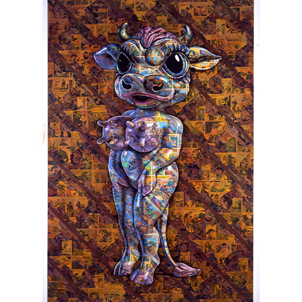
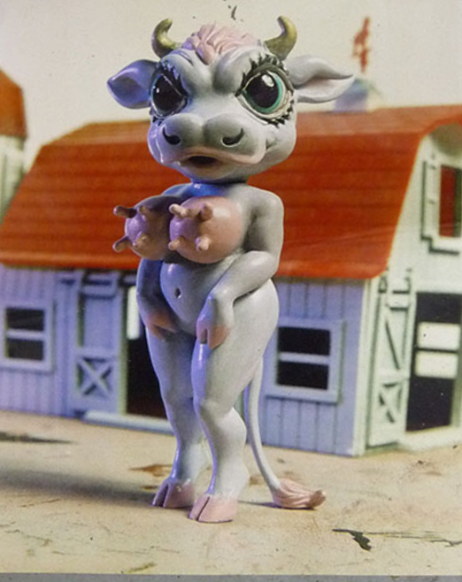
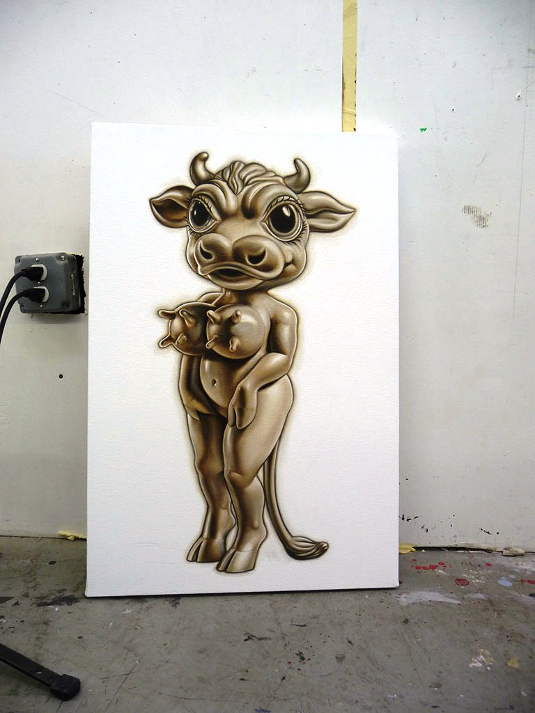
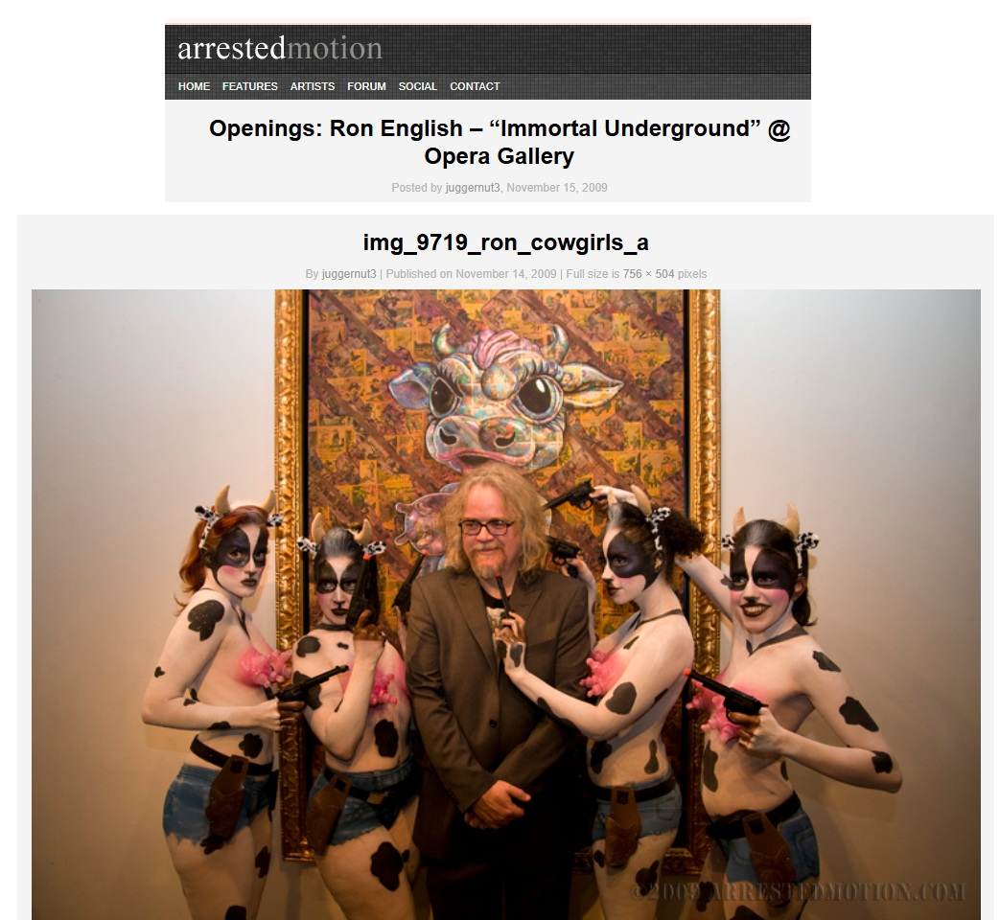
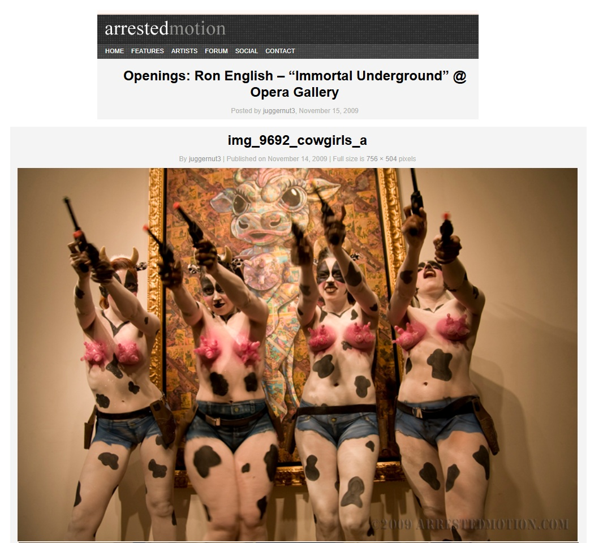
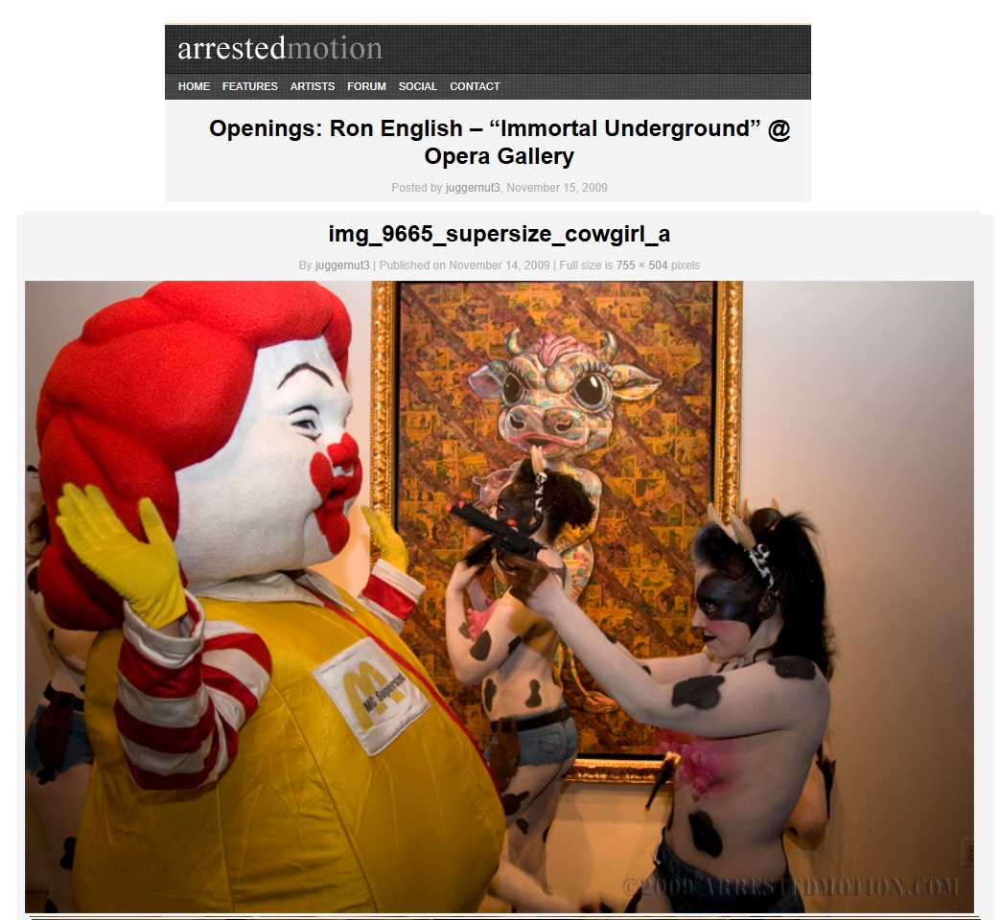
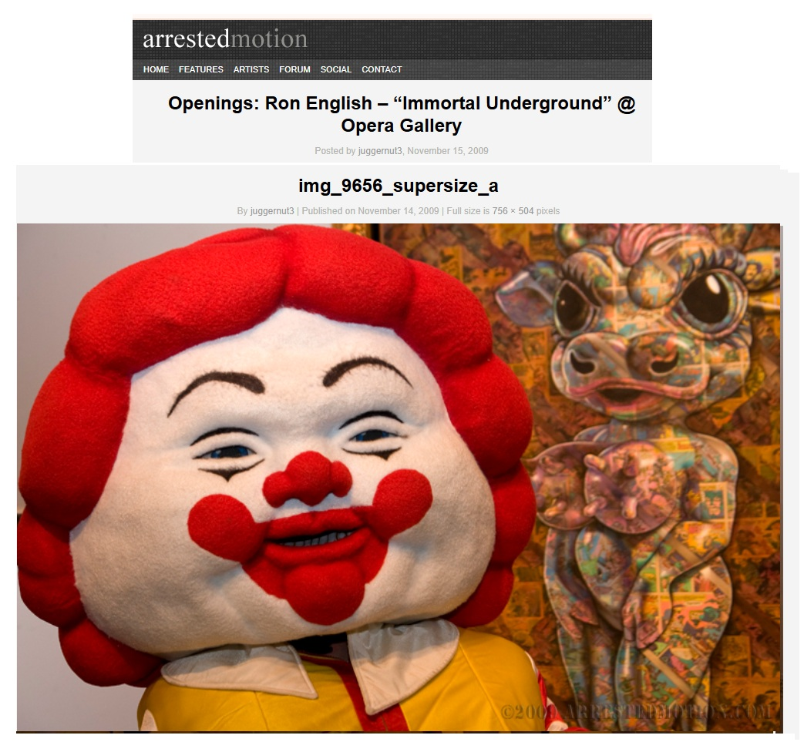
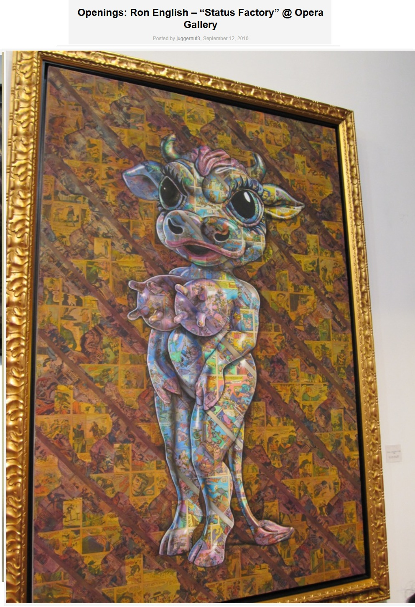
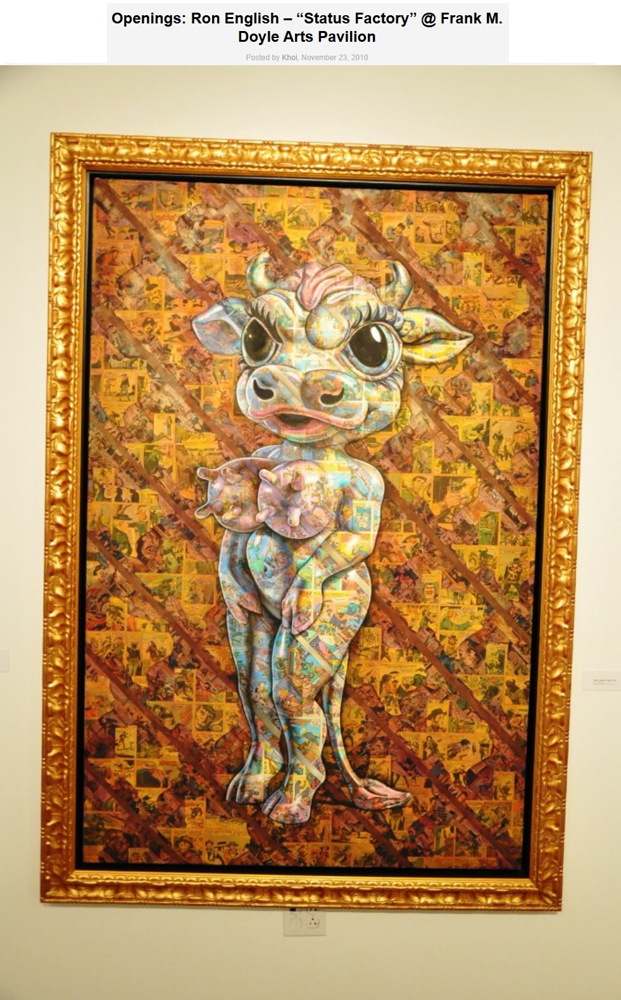
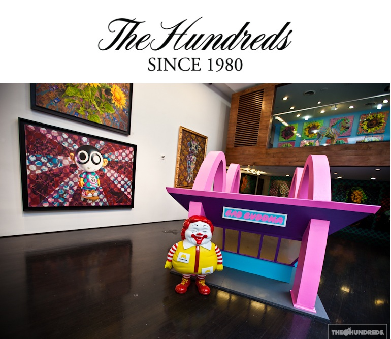

Exhibitions
Pop Perversity: Parody in Comics and Art, Comic-Con International, San Diego, California, US, July 24, 2009.
Immortal Underground, Opera Gallery, New York, New York, US, November 12–December 2, 2009.
Status Factory, Opera Gallery, New York, New York, US, September 12–October 29, 2010.
Status Factory – The Art of Ron English, Frank M. Doyle Arts Pavilion (Orange Coast College), Costa Mesa, California, US, November 12–December 17, 2010.
Literature
Ron English, Status Factory: The Art of Ron English (San Francisco: Last Gasp of San Francisco, 2014), p. 145. ISBN 978-0867197891.
Ron English, Original Grin: The Art of Ron English (Paris: Cernunnos, 2019), p. 360. ISBN 978-2374950938.
Notes
Ron English assembled and photographed a reference set as a model for this work.
Ancillary Documentation









